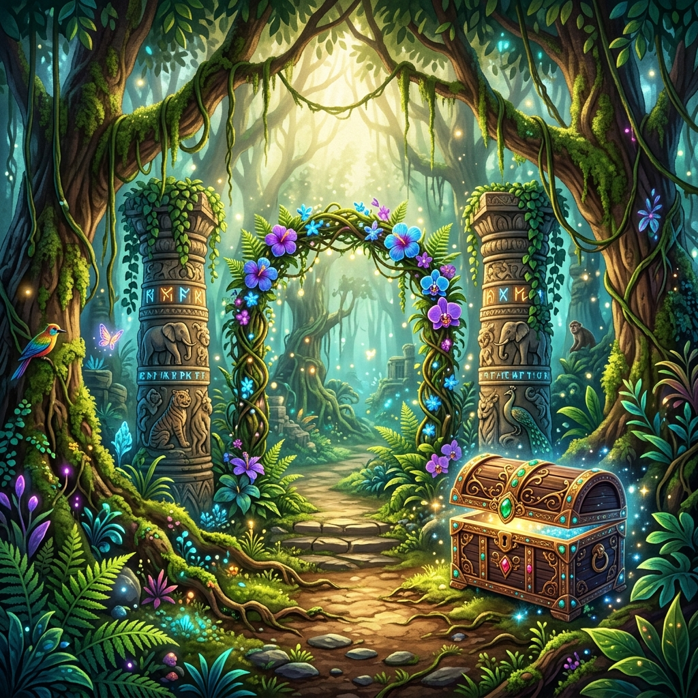

அத்தியாயம் 1 • Chapter 1
எளிது (1 ➔ 2 ➔ 3 Questions)
ஆம்பல் அடவி ரகசியம் (The Secret of Aambal Jungle)

🌲
📍 ஆம்பல் காட்டின் நுழைவு (Jungle Entrance)
💡 சொற்கள் குறிப்பு (Word Hints):
அடர்ந்த: Dense / Thick
காட்டிற்குள்: Inside Forest
பாதை: Path
நீங்கள் ஒரு அடர்ந்த ஆம்பல் காட்டிற்குள் நிற்கிறீர்கள். சுற்றிலும் உயரமான மரங்களும் பறவைகளின் ஒலியும் கேட்கின்றன. பாதை இரண்டாகப் பிரிகிறது. இடது புறத்தில் ஒரு பழைய மரப்பெட்டி உள்ளது. அதில் ஒரு திறவுகோல் பற்றிய குறிப்பு உள்ளது. வலது புறத்தில் ஒரு குகையின் வாசல் தெரிகிறது.
❓ வாசிப்பு & அரும்பொருள் புதிர் சவால் (1/1)
வினா 1 / 1
+50 XP 1st Try
1. வாசிப்புப் புதிர்: சிறுவன் நின்ற காட்டின் பெயர் என்ன?
🎯 உங்கள் அடுத்த நடவடிக்கை (Choose Your Path)
🔒 வினாக்களுக்கு விடையளித்து வழியைத் திறக்கவும்
🎒 உங்கள் பையின் பொருட்கள் (Inventory)
பொருட்கள் எதுவும் இல்லை (Empty)
📚 கற்ற புதிய சொற்கள் (Learned Words)
சொற்கள் தொட்டுப் படிக்கவும்